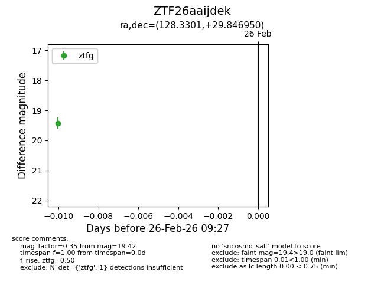
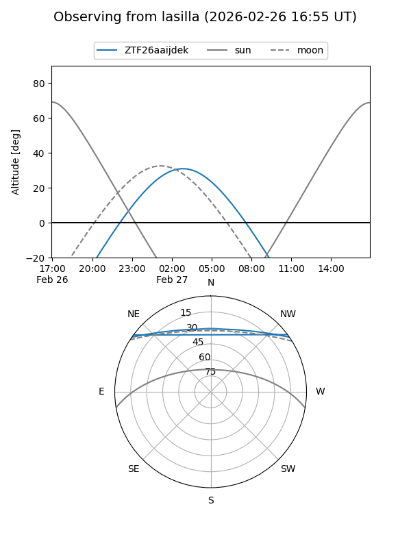
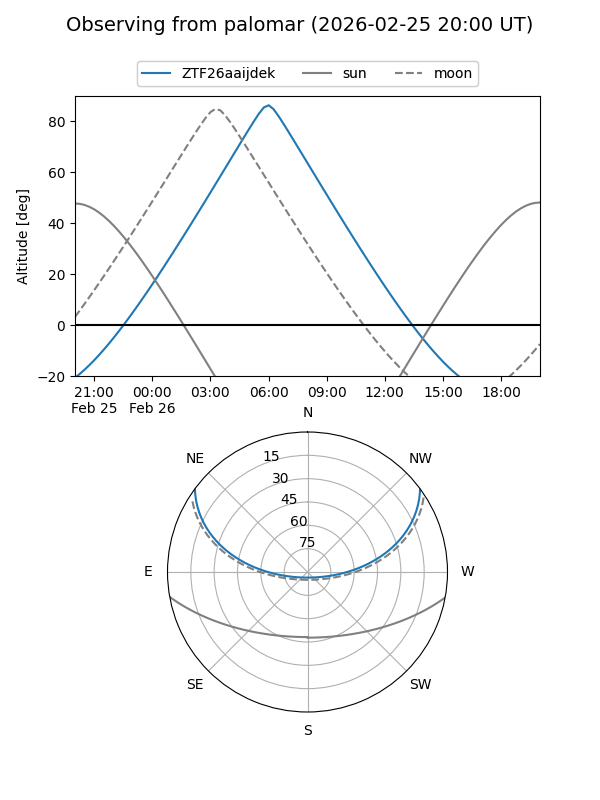

ZTF26aaijdek
Target ZTF26aaijdek at 2026-02-26 09:28
Aliases and brokers:
FINK: link
Lasair: link
ALeRCE: link
alt names
ZTF26aaijdek (ztf,fink_ztf)
Coordinates:
equatorial (ra, dec) = 128.3301,+29.84695
equatorial (HMS+DMS) = 08:33:19.22,+29:50:49.02
galactic (l, b) = (193.7215,+33.98022)
Flags:
Photometry:
last ztfg=19.42
1 ztfg detections
Lightcurve

Visibility


Additional plots